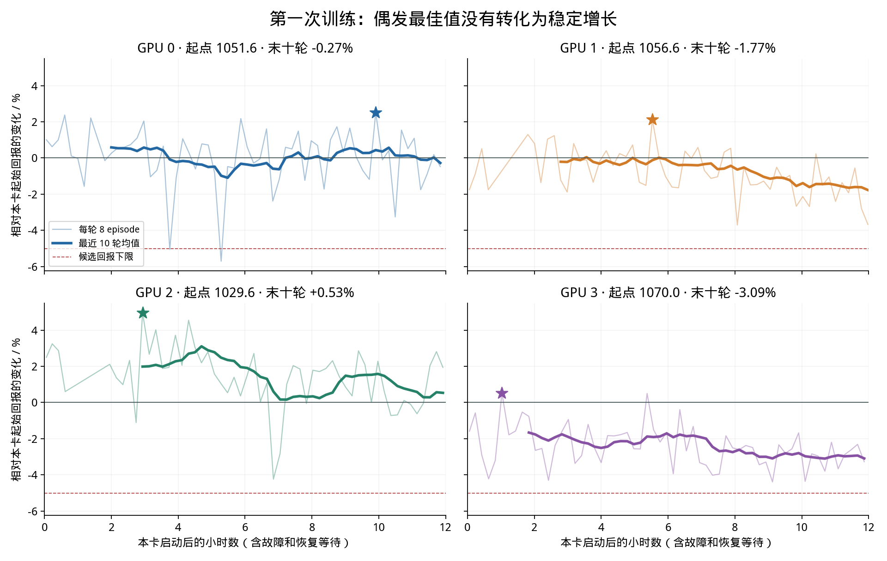
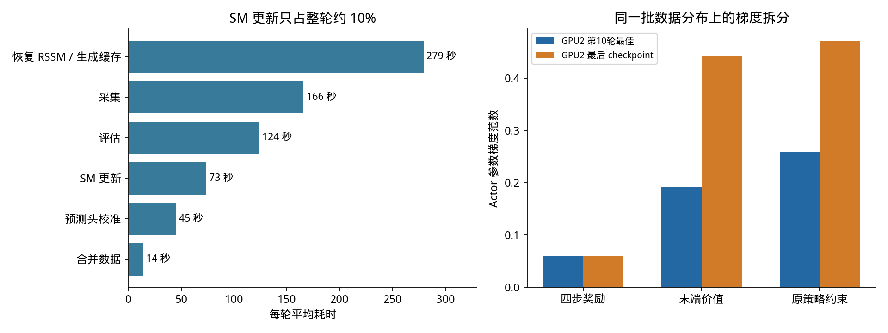

第一次四卡训练：最终结果与下一轮验证方案
训练链路与四步预测验收通过，但尚未证明策略获得稳定增益，也没有 PPO 对照支持效率优势。最值得验证的是：冻结 RSSM 对动作变化的预测是否可信，以及末端价值梯度是否在主导错误方向。
本报告使用 2026-11-01 14:44 截止后的最终文件。四个独立种子，共约 48 GPU 小时；前三卡退出故障已经修复并恢复。GPU1 在截止前完成末轮评估，其余到期退出。两小时巡检已取消，W&B 未启用。原权重与各卡 best-policy.pt 保留。
1. 训练结果与预期差距
| GPU | 完成评估轮数 | 起始回报 | 历史最高回报 | 最后一次评估 | 最后十轮均值 |
|---|
| 0 | 61 | 1051.63 | 1078.01 (+2.51%) | 1046.60 | 1048.74 (-0.27%) |
| 1 | 57 | 1056.56 | 1079.03 (+2.13%) | 1017.76 | 1037.85 (-1.77%) |
| 2 | 56 | 1029.62 | 1080.69 (+4.96%) | 1049.61 | 1035.12 (+0.53%) |
| 3 | 61 | 1069.99 | 1075.66 (+0.53%) | 1034.99 | 1036.95 (-3.09%) |
累计执行 117,875 次 SM 更新、232,000 次预测头更新；保存 1,876,649 条新增完整转移、4,012 个 episode；完成 235 次物理评估，共 1,880 个 episode。这里的更新数包含后来被拒绝的候选计算，不能当成最终权重的有效更新数。三卡到期中断的未完成阶段未计入完整评估或预测验收。
原估算每卡 45–70 轮、合计 9万–14万次策略更新及 140万–220万条转移，实际计算量在范围内；但当时没有预先约定策略应提高多少，也没有 PPO 的时间到质量目标。历史最优 +0.53%～+4.96% 是反复挑选后的峰值。末十轮缺少上升趋势，因此不能称为已经达到控制性能提升目标。

全部训练评估沿用 seed=123，每次只有 8 个 episode。1,880 次无失败不能解释为在 1,880 个独立新条件上验证零失败。各卡同一初始 checkpoint 的基线已有约 40.4 分差异。候选门槛允许回报低于初始值最多 5%；通过门槛只意味着未触发较大退化，并不意味着进步。
2. 起始回报是什么，为什么约为 1,050
起始回报是发布策略在当前单物体、z 轴任务上的整回合回报；不是从随机策略开始，也不是第一步奖励或“准确率”。一个完整回合目前为 499 个控制步，约 49.9 秒。评估记录未经缩放、未经折扣的总和；训练内部奖励乘 0.01 且使用 γ=0.99，两种数字不能直接比较。
| 组成 | 本次原策略探针平均贡献 | 定义 |
|---|
| 旋转进度 | +849.26 | clip(20 × 每步轴向转角, −6.28, 2) |
| 手型保持 | +493.70 | 1.5 × exp(−加权关节偏离平方和) |
| 目标与实际关节偏差 | -200.02 | −||target − q||，当前 conservative scale=1 |
| 物体位置漂移 | -49.25 | −100 × ||p − p_initial||² |
| 指尖距离 | -18.64 | 死区外二次惩罚，最大每步 −0.1 |
| 接触力/拇指非指尖接触等 | -22.34 | 本探针无掉落；记录函数之外的剩余奖励项 |
| 动作幅值 | -8.47 | −0.002 × Σ action² |
| 速度/力矩/功/偏轴其余项 | -2.55 | 按任务配置逐项累加 |
| 总回报 | 1041.70 | 499 步未折扣的原始奖励总和，8 episode 均值 |
总回报分解与实际奖励累加的最大差异为 0.00086 分以内。旋转项来自每步转角，20 是固定缩放，不能把该项直接称为弧度/秒。停转连续 60 步和掉落各有 −50 惩罚，并会缩短回合；持续握持、关节控制误差和姿态也显著影响总分。即使回报增加，也应同时检查真实旋转量是否增加。
起点由预训练 actor、冻结 WM 表征、观测归一化、物体/初始姿态、动力学随机化、动作与传感噪声、奖励系数和回合长度共同决定。本轮 gravity cone 起始为 1°，conservative scale 实际为 1.0。原策略已能完整运行；但这不证明任务已经饱和。旋转奖励有裁剪，控制误差仍有改善空间；是否存在可学习的余量需由 PPO 对照回答。
3. 新做的复测
| 探针 | 种子 / GPU | 平均回报 | 平均有符号转角 / rad | 失败 |
|---|
| initial-repeat1 | 123 / 0 | 1041.70 | 55.085 | 0 |
| initial-repeat2 | 123 / 0 | 1054.61 | 56.197 | 0 |
| initial-holdout | 987 / 1 | 1091.38 | 56.476 | 0 |
| best-holdout | 987 / 1 | 1099.28 | 56.892 | 0 |
同一 GPU、同一策略、同一 seed=123 的两次评估相差 12.92 分。新 seed=987 上，GPU2 第10轮最佳策略相比初始策略提高 0.72%，旋转量也略有增加；这组各 8 个 episode 的探针支持“小幅增益可能存在”，不足以确认训练时记录的 +4.96% 能泛化。需要更多预先固定的新条件和重复试验。诊断脚本不更新模型；四次评估均正常退出。
4. “预测精度”达到什么程度
| GPU | H4 奖励 RMSE / 常数基线 | H4 归一化关节 RMSE / 持续基线 | 正常策略数据奖励 RMSE | 失败召回 / 误报 / precision |
|---|
| 0 | 1.791 / 2.081 | 0.092 / 0.499 | 0.412 | 75% / 1.60% / 5.73% |
| 1 | 1.797 / 2.088 | 0.094 / 0.496 | 0.457 | 75% / 1.34% / 6.77% |
| 2 | 1.756 / 2.088 | 0.095 / 0.500 | 0.429 | 75% / 2.09% / 4.46% |
| 3 | 1.788 / 2.082 | 0.093 / 0.495 | 0.388 | 75% / 1.91% / 4.86% |
232 个完整校准阶段通过既定门槛；RSSM 起点恢复误差为 0。关节预测明显优于保持当前值的基线，奖励预测也优于常数。失败 Brier 分数最终略好于常数基线，但并不等于概率已经充分校准。RMSE 是误差量，不能转写为百分比准确率；关节误差处于归一化坐标，不是直接的弧度误差。每轮验证的数据混合分布会变化，因此不能把初始与最终 RMSE 的下降全部归因于模型学习。
失败召回始终为 75% 有一个关键限制：阈值在这批验证正例上按 20% 分位点选择，12 个正例通常得到 9/12 命中。它不是独立测试的 75% 准确率。最终每卡有效失败正例仍然全部来自初始 12 个失败 episode；该验证集又用于选择预测头 checkpoint。应固定开发阈值，用新的失败测试集检验泛化。
5. 根因分析：事实、推断与可证伪实验
A. 核心假设：能预测观察轨迹，不等于能指导改变动作
已确认：encoder、RSSM 动力学和图像 decoder 在本轮始终冻结；只校准 reward、prop 与 failure 头。SM 确实把 actor 动作送入 RSSM，也确实通过未来 deter/history 反传；输入梯度非零，当前抽样的 history 与实际 policy_obs 一致。没有发现“WM 输出没有接上 actor”这类断线。
尚未验证：在原策略动作附近小幅改变动作时，模型预测的回报排序以及梯度方向是否与真实仿真一致。当前门槛只检验记录动作下的前向误差和梯度存在性。接触切换、滑移、摩擦随机化、分类潜状态的 straight-through 梯度，都可能让低 RMSE 与正确控制方向分离。若冻结动力学不能辨别更好的动作，继续拟合读出头未必能修复这一点。
验证：固定真实起点和控制器状态，先验证无扰动重放；对动作做多尺度正负扰动，比较 H1/H4 真实与预测的 Δ回报、Δ转角及梯度投影。按稳定接触/切换/滑移分组。排序有效而梯度失效时，用同一个 WM 中的 PPO 与 BPTT 区分导数问题；二者都失效时，优先修模型和动作覆盖。
正常策略数据的单步奖励 RMSE 约 0.4，而在平均每步约 2.1 分的起点上争取 5% 增益，只相当于每步约 0.1 分。这个量级差不证明模型方向必错——共同误差可能相互抵消——但说明总体 RMSE 通过仍不足以支持细小动作差异的优化。应再拆分旋转、手型、控制误差和漂移的预测误差，检查模型是否只学好了容易预测的分项。
B. 短期奖励被末端价值与约束盖过
本轮 H=4 约为 0.4 秒，γ=0.99 的有效折扣跨度约为 10 秒，剩余部分依赖 critic。对 GPU2 最佳和最后 checkpoint，在同一缓存分布上各抽 3 批、每批 64 起点，得到：
| checkpoint | 四步奖励梯度范数 | 末端价值梯度范数 | 约束梯度范数 | 奖励/末端梯度余弦 |
|---|
| best | 0.060 | 0.192 | 0.259 | +0.444 |
| final | 0.059 | 0.443 | 0.471 | -0.092 |
最后 checkpoint 的末端价值与约束梯度约为奖励梯度的 7–8 倍；奖励与末端梯度的平均夹角余弦从最佳时的正值变为小幅负值。两份 checkpoint 的末端值均占标量目标约 96%，这是短 rollout 加 bootstrap 的自然结果，比例大本身不是 bug；但导数主导及方向变化值得验证。约 22% 动作分量在 clamp 边界，另有部分梯度抵消。
critic 仅用想象 λ-return 训练；从随机 critic 开始，imagined return 上升包含 critic 尺度收敛，不能把其从约 0.05～0.31 上升到约 2.2 当作真实控制提升。当前测量没有真实未来回报来校验 critic。下一步比较原尾项、减弱尾项和真实回报预热 critic，并匹配实际动作变化量；仅降低 anchor 而不检查模型，可能放大错误梯度。
C. 数据主要缺少有效覆盖与独立验证
整晚累计约 188 万条完整转移，但最后每卡实际合并窗口只有约 4.86万～4.89万条、149～154 个 episode；训练缓存每轮最多 2万个起点，保留初始数据与最近三轮。累计采集量不能等同于模型同时看到的独立信息量。新数据大多是已经会完成的同物体旋转；新采集 270 个失败中，只有 15 个在各轮划分时进入验证。
最终有效失败验证仍是初始 12 个；额外两个验证失败分别只有 3/8 步，被 warm-up=8 的起点规则排除。训练起点随机截断也使稀少终止标签更少。它们不是已证明的数据泄漏，但造成明显盲区。应先做等规模的分层 reservoir 与现有滚动采样对照，再做 25%/50%/100% 数据量曲线，以区分“量不够”与“覆盖不对”。早期失败单独验收，测试集不参与阈值与 checkpoint 选择。
D. 工程问题确实存在，但已知退出故障不能解释全部平台期
原生析构 SIGSEGV 发生在完整仿真结果写出之后；独立 worker 退出路径和断点校验已经修复。它减少了前三卡的可用时间，未发现修复后日志指标 NaN/Inf。动作/目标对齐、终止边界、checkpoint 哈希、恢复 RNG 与 actor 推理一致性都有对应检查；这些仅排除了部分实现错误，不证明整个优化正确。
更相关的工程缺口是缺少独立评估、模型动作敏感度测试、critic 真实回报校验，以及成本高的重复重建缓存。PPO 对比还必须显式处理 checkpoint warm-start：当前校准文件没有 PPO optimizer/central critic，不能直接调用上游 full resume。另一处公平性风险是 PPO 常驻环境会推进重力课程，而当前 SM 每轮新建环境；对比中必须固定课程。
E. 关于 SM 是否充分利用 WM 的预测
当前证据更支持“预测可用于状态表征，但其动作敏感度与价值外推尚未被验收”。actor 使用未来 deter、预测关节/接触与控制器目标；然而本轮沿用的发布配置只启用 prop/depth 预测，未训练完整 pose/tactile/value/object 预测头，RSSM 又没有适应新动作分布。通过关节 RMSE 门槛，不能说明模型已准确表示转动物体与接触切换的收益。
这不等于 SM 方法无法利用 WM。SuperMimic 论文中的模型会随新数据更新，并使用物理状态和仿真上下文监督；本项目目前是冻结 RSSM 的四步 BPTT 适配。其 H=32 对应另一控制频率，不能只按步数照搬。可以在模型方向测试后，评估保持感知表征稳定的动力学微调或残差模型，再考虑更长 rollout。
6. PPO 的预期与对比训练
WM-Craftnet 原路径使用 WM 表征与 PPO。以真实仿真回报更新的 PPO 不依赖 RSSM 对动作的导数，因此是检验本轮瓶颈的必要对照。它仍依赖表征、探索和价值估计；从强预训练策略起步，不能保证获得显著提升。PPO也不能被预先承诺比 SM 更快。
| 方案 | 训练信号 | 回答的问题 |
|---|
| A：WM-Craft + 真实仿真 PPO | 同一冻结表征，真实奖励与 advantage | 不依赖模型动作导数时能否改善 |
| B：WM-Craft + SM | 同一初始化，四步模型反传 | 当前或经过诊断修正的 SM 是否有收益 |
| C：同一 WM 内 PPO（短诊断） | 与 B 相同模型/起点，用 likelihood ratio | 失败来自模型预测还是 BPTT/critic/约束 |
优先顺序：① 固定评估协议并完成动作方向测试；② 做 critic/数据覆盖的短消融；③ 实现并验收 PPO warm-start，30 分钟测吞吐，四卡一小时配对试跑；④ 条件通过后再开独立的 A/B × 两个种子 × 每卡 12 小时正式比较。C 按诊断需要运行，不扩大成昂贵全组合。
主比较匹配 actor、WM、归一化、物体、奖励、控制周期、噪声和初始化；critic 使用相同架构与信息访问。上游带 privileged critic 的 PPO 可作为另一个实用基线，需标明区别。每个方法给相同调参预算。周期检查用固定的 32 episode 开发子集，最终用开发 128 episode 选模型，再用独立 200 episode 测试；预计保留最后 90 分钟做完整评估，以试跑实测耗时调整。两训练种子仅支持初步比较。
预先提出的工程目标为：独立测试平均原始回报提高至少 5%、真实旋转不下降、失败率不出现实质退化；这不是效果预测。分别比较相同 GPU 小时和相同真实交互数；到达同一质量门槛才计算加速比。所有准备、重建缓存、校准、评估和失败重试都计入成本。完整因果判据与交付清单见项目 docs/EXPERIMENTS.md。

当前每轮约 701 秒，其中 SM 73 秒、缓存准备 279 秒、采集 166 秒、评估 124 秒、头训练 45 秒、合并 14 秒。缓存准备约占 40%；即使完全免去这一项，理想上限也只有约 1.66 倍整体加速，尚未实测。已有数据支持先减少重复恢复与进程启动成本，不能支持“换成 SM 就会数量级加速”。PPO 在本机的环境数、相机开销和端到端吞吐仍需要测量。
7. 文件与复现
- final-summary.json / final-evaluations.csv：最终四卡结果，保留每轮值。
- data-audit.json：实际缓存规模和失败样本来源。
- reward-*.json：四次奖励分解、权重哈希与回合结果。
- gradient-*-gpu2.json：同一缓存上的奖励/尾项/约束梯度。
- diagnostic-summary.json：合并诊断结果和限制。
- scripts/diagnose_reward.py、scripts/diagnose_sm_gradients.py：可复用的只读诊断入口。
- docs/EXPERIMENTS.md：待执行的分阶段实验与 PPO/SM 比较协议。
本报告未启动新的长训练，也未修改原训练权重或验收阈值。模型梯度、数据覆盖与策略增益之间的因果关系仍需上述干预实验确定。主要证据来自本项目源码、最终事件日志和新增的只读探针。